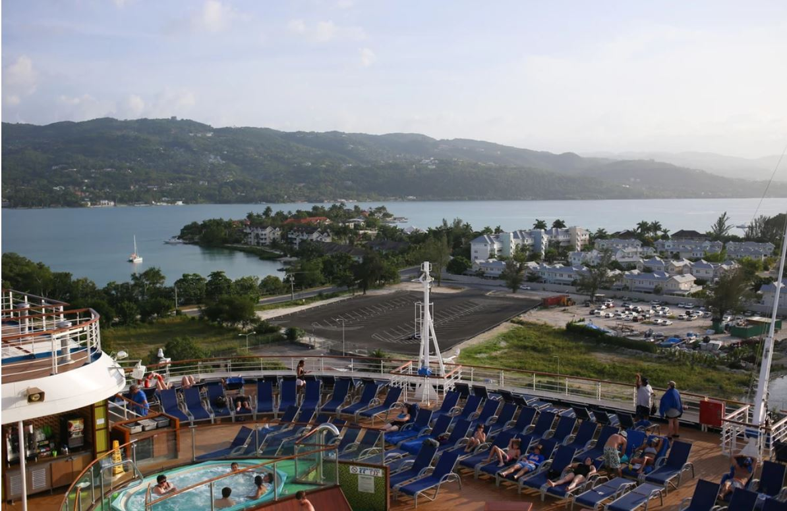
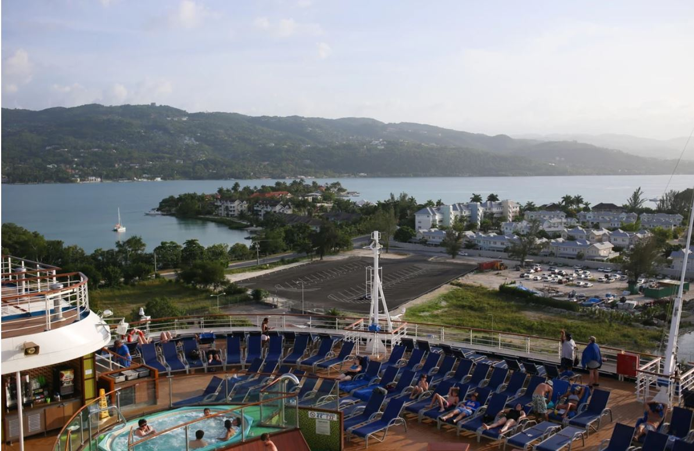
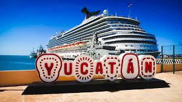
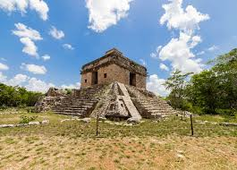

Yucatan(Progresso)
So our first stop is pictured above - Yucatan(Progresso). From the boat, this port seemed like a beautiful place! Unlike developed private cruise ports that are common nowadays, Progreso is a real cruise port.It takes you to some of the most famous Mayan ruins. This little port, famous for the longest pier in the world, about 6.5 kilometers, over 4 miles long. We had a Bus tour- from white sandy beaches to historical towns, natural pools and Mayan ruins are memerizing.

Cozumel
Day Three we went to one of the favorite locations: Cozumel, Mexico. There are many things to do in Cozumel – Mexico’s largest Caribbean Island. It's like silvery white sandy beaches, swaying palm trees and an azure blue ocean. There are lots of fun activities to do in Cozumel like Dolphin Swim, Thrill and Chill Zip line, Snorkeling Beach, ancient City of Tulum and Chankanaab Beach. ANYWAYS, they are generally a lot of fun !


Fun Day at Sea
The rest of the cruise was lovely! If you've never been on a cruise, it's basically a moving island of fun, music and a LOT of food. You can feel better about eating the molten lava cake, or as they call it, "The Carnival Chocolate Melting Cake." I'm pretty sure that's half the reason you should go on a carnival cruise.
The cruise director and activity coordinators work hard to make sure no one is bored, even in the middle of the ocean.